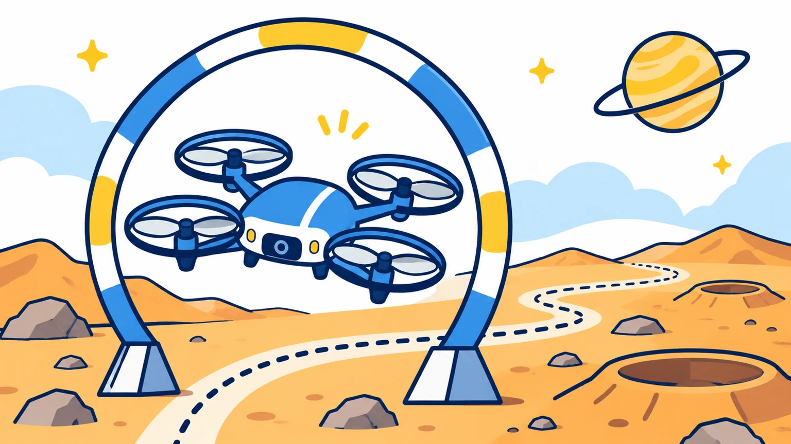
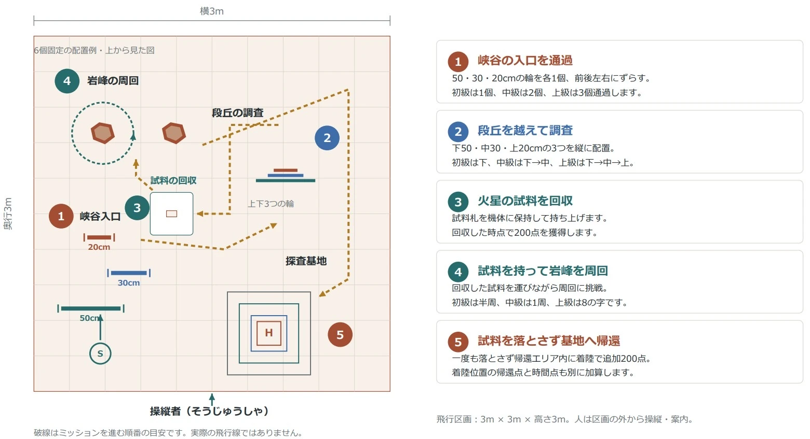

理大祭2026 / 企画の詳細
ドローン操縦体験
君も惑星探査パイロット！自分の操作でゲートの先へ。
- 開催日
- 時間
- 10:00–18:00時間内いつでも
- 会場
- 講義棟5階 K503
- 料金
- 1回500円

きみが、探査パイロット！
ドローンは、惑星探査の相棒。コントローラーを使って、惑星探査をテーマにしたコースを進んでみよう！
ねらうのは、コースのゲート。機体が進む方向をたしかめながら、ゲートや障害物を通りぬけよう。自分の操作でドローンが動く、わくわくする体験が待っています。
MARS EXPLORATION
火星探査ミッションに出発！
ドローンを操縦して、火星の試料を持ち帰ろう！ ゲートをくぐり、試料を回収して、探査基地への帰還を目指します。

峡谷の入口を通過
輪のゲートをくぐって、火星探査のスタート！ 機体の向きと位置をたしかめよう。
段丘を越えて調査
高さの違うゲートに挑戦。上手に高さを調節して、次のエリアへ進もう。
火星の試料を回収
試料札をドローンで持ち上げよう。ここからは、試料を運ぶミッションです。
試料を持って岩峰を周回
試料を落とさないように、岩峰のまわりを飛ぼう。落ち着いた操縦がポイント！
基地へ帰還！
試料を持って探査基地へ。最後は帰還エリアに着陸して、ミッション達成を目指そう。
初級・中級・上級のミッション
通過するゲートの数や周回の仕方が変わります。コース図で、それぞれの違いも見てみよう。
本物のドローンで、ゲートに挑戦

画面の中だけでなく、目の前で飛ぶドローンを自分で操作します。思ったところへ進められるかな？ コントローラーを持って、チャレンジしてみよう。
10:00〜18:00の開催時間中、いつでも体験できます。1回500円です。
実際の飛行の様子
ドローンの飛行動画を見る
屋内での飛行の様子です。
動画を読み込めませんでした。時間をおいてもう一度お試しください。